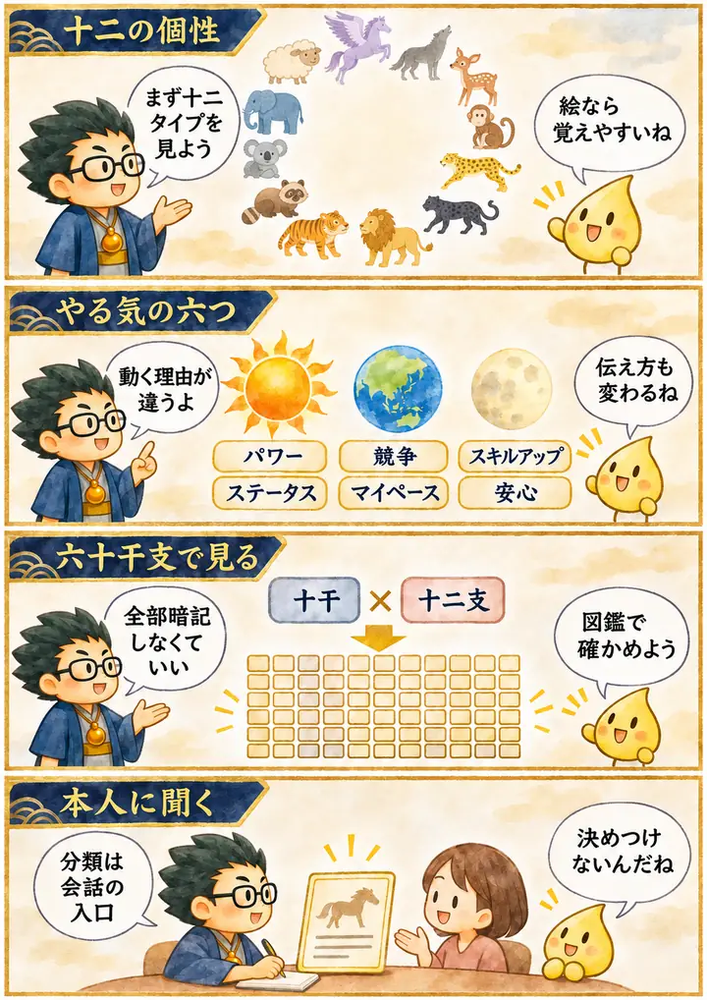

第4期 Zoom講座・第3回
干支アニマルと六十干支
この回の要約
干支アニマルは人を決めつける札ではなく、相手の「動く理由」を知り、伝え方を選ぶための会話の入口。
12タイプを、太陽・地球・月の3チームと6つのやる気スイッチで整理します。後半では、十干と十二支を組み合わせた六十干支へ進みます。すべての意味を暗記するのではなく、図鑑やAIを参照し、本人の経験を聞きながら言葉を確かめることが実践の中心です。
太陽はパワー／ステータス、地球は競争／マイペース、月はスキルアップ／安心がやる気スイッチの入口です。同じ人でも場面や経験で反応は変わるため、表は講義内の整理を復習するための補助線として使います。
4コマ漫画でつかむ

タイムスタンプ
時間を押すと、上の動画がその場面から再生されます。
- 00:00講座開始・今回の導入
- 10:49干支アニマルと六十干支を学ぶ
- 20:45干支アニマルの図鑑を開く
- 21:5712タイプを絵で覚える
- 23:18太陽・地球・月と6つのやる気スイッチ
- 24:343チームで伝え方を変える
- 27:263チームの違いと支え合い
- 50:1012タイプを一つずつ見る
- 52:27オオカミのマイペースを例に考える
- 1:05:10クロヒョウのタイミング感覚
- 1:07:05ライオンの責任感とステータス
- 1:09:49トラの力とマイペース
- 1:12:08たぬきの安心感と経験
- 1:22:18コアラの競争と長期視点
- 1:25:28ゾウのパワーと「ときめき」
- 1:31:59違いを知って会話を楽しむ
- 1:32:05十干×十二支＝六十干支
- 1:33:34暗記より図鑑と実践
質疑応答
※ 講義の要約と書き起こしをもとに、学習用に整理・再構成しています。吹き出しは逐語引用ではありません。
12タイプは「覚える順番」を助ける地図
21:57から見る ▶12タイプを全部覚えてからでないと、鑑定に使えませんか？
最初は絵と順番で全体を見ましょう。実際の人を鑑定し、分からない時に図鑑へ戻る方が、言葉と経験が結びつきます。
持ち帰り：自分に関係する三つの干支アニマルから調べ、共通点と違いを一つずつ書く。
やる気スイッチを、相手に届く説明へ使う
23:18から見る ▶同じ案内なのに、すぐ動く人と反応しない人がいるのはなぜですか？
講義では、太陽はパワーとステータス、地球は競争とマイペース、月はスキルアップと安心を入口に整理します。内容を変えるより、最初に何を伝えるかを選びます。
持ち帰り：一つの案内文を「結論から」「人柄から」「可能性から」の三通りで書く。
タイプの違いは、チームを支え合う材料
27:26から見る ▶正確に進めたい人と、ひらめきで動く人は一緒に働けますか？
違いが分かると役割を分けられます。安定して進める力、関係を整える力、大きく跳ぶ力を組み合わせると、どれか一つの偏りを補えます。
持ち帰り：苦手な相手を直そうとせず、その人が補っている役割を一つ探す。
六十干支は、十干と十二支の組み合わせ
1:32:05から見る ▶60個すべてを暗記する必要がありますか？
十干と十二支が組み合わさって60になります。最初から暗記するより、名前と絵を見て、鑑定で必要になった組み合わせを図鑑で確かめましょう。
持ち帰り：自分の六十干支を一つ開き、十干の要素・十二支の要素・自分の実感を三列で整理する。
AIと図鑑を使い、最後は本人に確かめる
1:33:34から見る ▶AIが詳しく説明してくれたら、そのまま相手へ渡してもいいですか？
AIは調べる順番と文章の整理に便利です。ただし、図鑑と照合し、「ご自身ではどう感じますか」と本人に聞いてから、その人に合う言葉へ直します。
持ち帰り：AIの説明へ「根拠の資料」「本人に聞く質問」「断定を避ける言い換え」を追記する。
覚えておきたいこと
- サイト内の正式名称は「干支アニマル」。12タイプを優劣ではなく違いとして扱う。
- 太陽はパワー／ステータス、地球は競争／マイペース、月はスキルアップ／安心。
- 3チームは性格の断定ではなく、説明の順番や関わり方を考える補助線。
- 六十干支は十干と十二支の組み合わせ。暗記より、図鑑を引く習慣をつける。
- AIの出力は資料と照合し、本人の経験を聞いてから鑑定の言葉へ整える。
復習ポイント
講義内の占術上の説明・時代の読み・象徴的な解釈は、講師の見立てです。客観的な事実や将来を保証するものではありません。